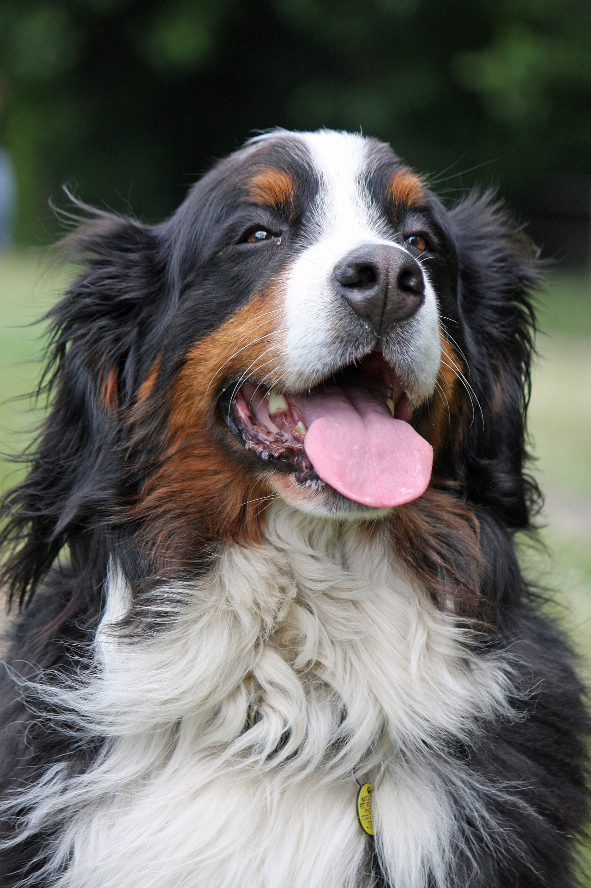
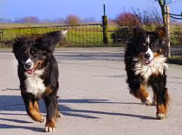

The Bernese Mountain Dog, also known as the Berner, is an extremely versatile working dog with an excellent temperament from the farmlands of Switzerland. They are easily identifiable by their tricolor coat and white "Swiss cross" on the chest. Given its sturdy frame, the Berner was traditionally used as draft dogs, herders and watchdogs. They are named after the canton of Bern which is the area they hail from in Switzerland. They are a friendly breed with a calm disposition, highly intelligent and trainable which makes them a great choice for novice dog owners. However, it is important to consider that the Berner is large sized dog, usually about 100 pounds, with high energy and sheds quite a bit, which is best suited for homes with large outdoor spaces. They make for great watchdogs with their loud bark, and their unconditional love, loyalty, and goofiness make them a great hit with kids. However, it is best that they receive adequate obedience and socialization training. This is especially important as the breed is slow to mature physically and mentally and they do not respond well to harsh corrections given their soft personality.
Refer to Dog Time for tips about buying a Bernese Mountain Dog.
Here are some of the reasons why it is benefical.